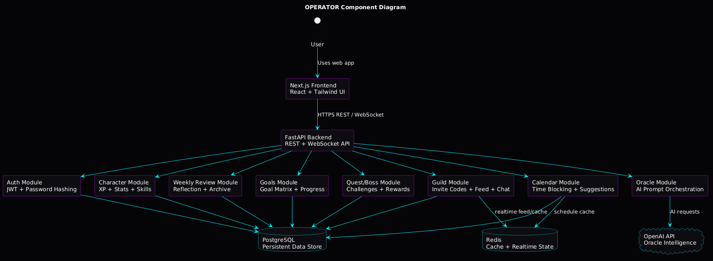
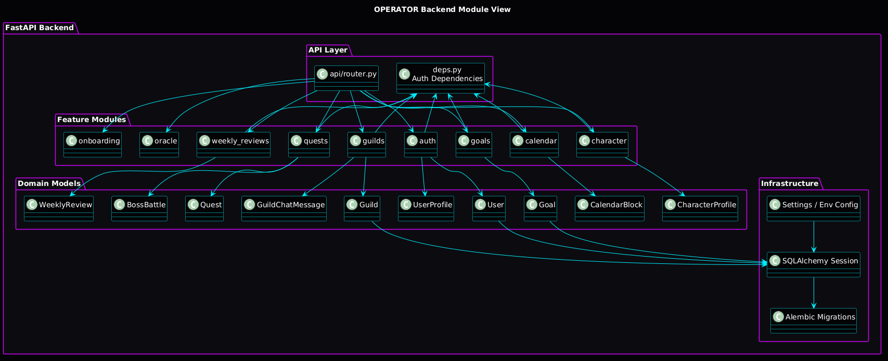
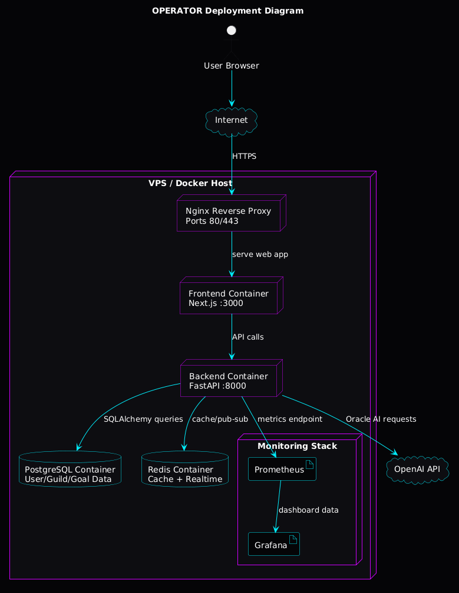
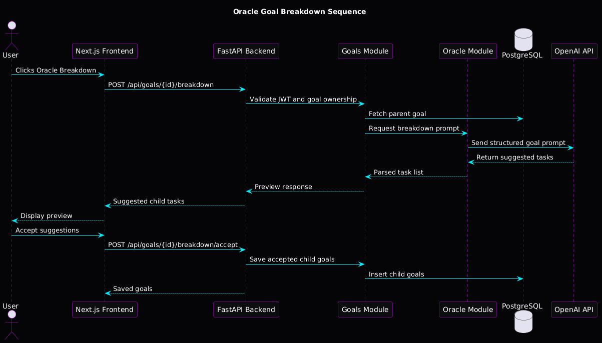

OPERATOR / Life Quest Final Architecture Report
1. Project Overview
OPERATOR, also called Life Quest, is a full-stack AI-assisted gamified life-management platform. It helps users transform long-term ambitions into structured goals, actionable tasks, weekly reviews, scheduled calendar blocks, RPG-style XP progression, quests, boss battles, and guild accountability.
2. Architecture Style Identification
The selected architectural style is a Layered Modular Monolith with Service-Oriented Container Deployment. Internally, the backend is divided into feature modules. Externally, the system is deployed as separate containers for frontend, backend, database, cache, reverse proxy, and monitoring.
3. Justification of Architecture Style
OPERATOR has many features, but they are closely related around a single user identity, goal system, progression engine, and life-management workflow. A full microservices architecture would add unnecessary complexity at this stage. The modular monolith gives maintainability, simpler deployment, easier testing, and a clear future path to service extraction.
4. Key Architectural Structures
4.1 Component View
The component diagram shows the major runtime components. The Next.js frontend communicates with the FastAPI backend. The backend coordinates feature modules and connects to PostgreSQL, Redis, and OpenAI.

4.2 Module View
The module view shows backend organization. The API layer routes requests to modules such as auth, onboarding, goals, calendar, Oracle, character, weekly reviews, quests, and guilds.

4.3 Deployment View
The deployment diagram shows how OPERATOR can run on a VPS or Docker host. Nginx accepts HTTPS traffic and routes to frontend/backend services. PostgreSQL and Redis run as data services, and Prometheus/Grafana provide monitoring.

4.4 Sequence View
The sequence diagram explains the Oracle goal breakdown workflow. It demonstrates authentication, goal ownership validation, database access, AI orchestration, preview generation, and persistence of accepted child goals.

5. Quality Attributes
- Security: JWT authentication, password hashing, protected routes, backend-only OpenAI key usage, ownership checks, and guild moderation.
- Performance: FastAPI endpoints, PostgreSQL indexing, Redis-ready caching, and isolated AI requests.
- Scalability: Containerized services, Redis support, Kubernetes-ready deployment boundaries, and backend horizontal scaling potential.
- Maintainability: Feature modules, central API routing, Alembic migrations, and clear frontend API helpers.
- Reliability: Persistent PostgreSQL storage, Docker volumes, health endpoints, and monitoring readiness.
- Usability: Cyberpunk command-center interface, bottom navigation, Oracle terminal, calendar planner, and RPG progression feedback.
6. Trade-Off Analysis
- Simplicity vs Independent Scalability: The modular monolith is easier to build but cannot scale individual modules independently.
- AI Capability vs Cost: OpenAI improves planning and coaching but introduces cost and latency.
- Strong Consistency vs Flexibility: PostgreSQL gives consistency while JSONB supports flexible AI/export data.
- Gamification vs Complexity: XP, quests, skills, and boss battles increase motivation but require careful business logic boundaries.
7. Pros and Cons
Pros
- Easier to develop and debug than microservices.
- Clear module boundaries.
- Strong database consistency through PostgreSQL.
- Practical Docker/VPS deployment.
- Redis supports future realtime features.
- OpenAI key remains protected on the backend.
Cons
- Backend can become large if modules are not maintained.
- Backend failure affects all backend features.
- Individual feature modules cannot be deployed independently yet.
- AI calls may introduce latency and cost.
- Realtime guild chat may eventually need stronger event-driven infrastructure.
8. Architecture Design Process
- Project Description: AI-assisted life-management platform with gamification and guild accountability.
- Requirements Identification: Authentication, onboarding, goal management, AI breakdown, scheduling, reviews, XP, quests, guilds, and monitoring readiness.
- Component Identification: Frontend, backend, PostgreSQL, Redis, OpenAI API, Nginx, Docker, Prometheus, and Grafana.
- Back-of-the-Envelope Estimation: A 2-4 vCPU, 4-8 GB RAM VPS can support early use; AI calls should be rate-limited.
- Style Selection: Layered modular monolith because it balances simplicity and maintainability.
- Architecture Design: Frontend calls backend; backend modules handle domain logic; PostgreSQL persists data; Redis supports realtime/cache; OpenAI powers Oracle.
- Analysis and Improvement: Add more tests, Jenkins, Kubernetes, Ansible, monitoring dashboards, frontend modularization, and AI rate limits.
9. Conclusion
OPERATOR demonstrates strong architectural thinking through layered separation, modular backend design, containerized deployment, AI integration, and clear quality-attribute trade-offs. The chosen architecture is appropriate for the current project stage and can evolve as the application grows.